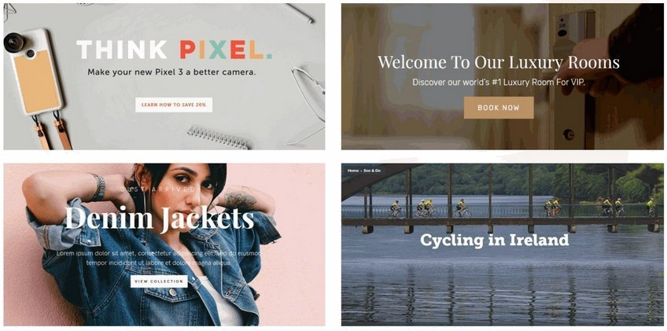
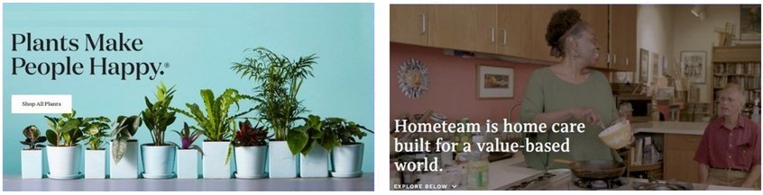
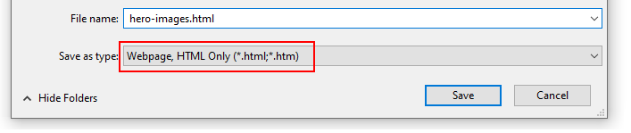
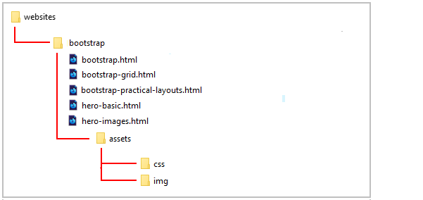
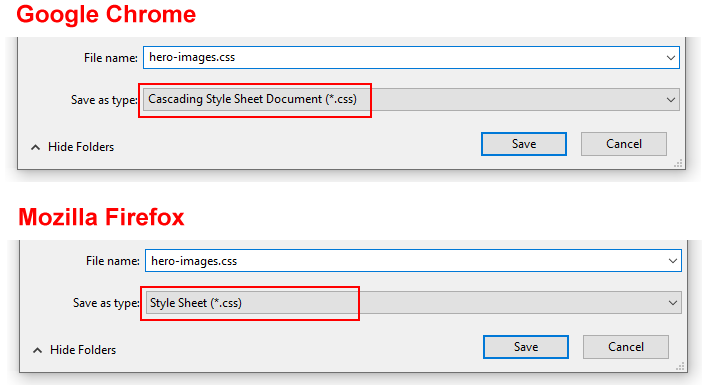
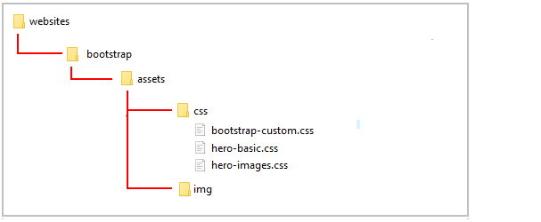

Style the layout and appearance of four hero sections in a sample web page.
Add background images to the hero blocks.
Add a shadow effect to the hero text.
Add a tinted overlay behind the hero text and in front of the background image.
Add different background images for desktop/laptop and mobile screens.
You can view a finished version of the sample web page you will update in this Tutorial by clicking the link below. The finished sample will open in a new tab of your web browser.
The most common design approach to hero blocks on web pages is to use a full-width background image. Typically, the text in front of the background image is centre-aligned. See the examples below.

You will also see examples where the text is left-aligned.

In this Tutorial, you will work with four examples of hero blocks with background images.
Downloading your sample files
Your first task is to download the following web page and a stylesheet:
hero-images.html: Click this link to open the web page in a new tab of your web browser.
Right-click anywhere in the web page and choose Save as... (Chrome) or Save Page As... (Firefox) from the context menu displayed.
Save the web page in the bootstrap sub-folder of your websites folder with the name hero-images.html
Ensure the Save as type: dropdown list is set to Webpage, HTML only (*.HTML, *.htm).

You can close the browser tab containing the hero-images.html web page.
Your websites/bootstrap sub-folder shown now look as shown below.

hero-images.css: Click this link to open the stylesheet file in a new tab of your web browser.
Right-click anywhere in the browser window, and from the context menu, choose Save as... (Chrome) or Save Page As... (Firefox).
Save the hero-images.css stylesheet file to your websites/bootstrap/assets/css sub-folder.
Ensure the Save as type: dropdown list is set to the correct file type.

You can close the browser tab containing the hero-images.css stylesheet.
Your websites/bootstrap/assets/css sub-folder shown now look as shown below.

Downloading your sample images
You will need some sample images to work with. Right-click on the images below, choose Save Image As from the context menu, and download them to your C:/websites/bootstrap/assets/img sub-folder.
Save the stylesheet and view the effect on the web page in your web browser.
Adding a shadow effect to the hero text
To make the text easier to read against the background image, let's add a shadow effect to the heading and sub-heading.
Note: The three dots ... simply refers to all the other styles for the CSS selector.
In the stylesheet, add the following new style rules for the heading and sub-heading.
.hero-7 h1 {
...
text-shadow: 2px2px#222;
}
.hero-7 h2 {
...
text-shadow: 2px2px#222;
}
Save the stylesheet and view the effect on the web page in your web browser.
Adding an overlay to the background image
To make the text even easier to read against the background image, let's add a semi-opaque overlay in front of the image and behind the heading and sub-heading.
In the stylesheet, add the following new style rule for the hero-7 hero block.
Save the stylesheet and view the effect on the web page in your web browser.
Adding a shadow effect to the hero text
To make the text easier to read against the background image, let's add a shadow effect to the heading and sub-heading.
In the stylesheet, add the following new style rules for the heading and sub-heading.
.hero-8 h1 {
...
text-shadow: 2px2px#222;
}
.hero-8 h2 {
...
text-shadow: 2px2px#222;
}
Save the stylesheet and view the effect on the web page in your web browser.
Adding a tinted overlay to the background image
To make the text even easier to read against the background image, let's add a blue-tinted semi-opaque overlay in front of the image and behind the heading and sub-heading.
In the stylesheet, add the following new style rule for the hero-8 hero block.
Follow these steps below to upload your entire Bootstrap folder to your website on GitHub.
Open a new tab in your web browser and go to GitHub.com. If you are not already signed in to your GitHub account, sign in now.
On your GitHub home page, click the name of the repository (‘repo’) that holds your web pages. Its name will look as follows, where username is your chosen username on GitHub.
username.github.io
On the next GitHub screen displayed, click the Add file button near the right of the screen and choose Upload files from the dropdown list.
In File/Windows Explorer, select your bootstrap folder, and drag-and-drop it to your repository on GitHub.
Scroll down to the bottom of the GitHub screen, and accept or edit the short message (Add files via upload) in the Commit changes box.
Finally, click the green Commit changes button to upload your entire bootstrap folder and all the files it contains.
Your uploaded web page is published on GitHub at a web address similar to the following, where username is the username you have chosen for your GitHub account: